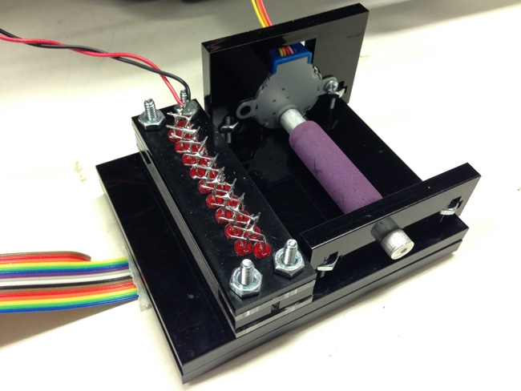
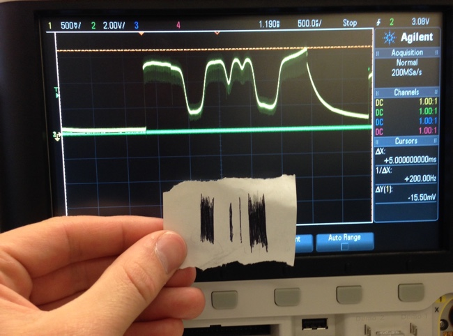
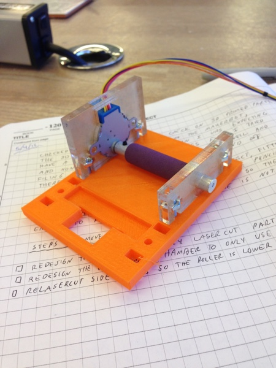
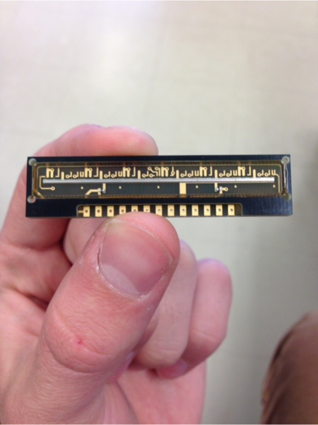

Spring 2015
For MIT's 6.115 Digital Electronics Lab final project I made a minature printer and scanner that you could play Tic Tac Toe with. The printer was a Thermal Printer. The scanner I designed myself out of a TSL1406 Linear Sensor Array and a laser cut acrylic body. The brains of the project was the Cypress PSoC 5. To play a game of Tic Tac Toe, the PSoC would first print out a Tic Tac Toe board on the printer with the computer's first move. You could then tear off the board, play your move by marking it with a pen or pencil, and then scan it. The PSoC would process the image to figure out what move you played, what move the computer would play in rebuttle, and then print out a new board to repeat the process.


 